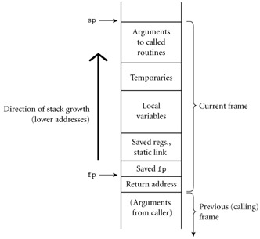

|
|
|
|
8.2 Calling Sequences
Maintenance of the subroutine call stack is the
responsibility of the calling sequence―the code executed by the caller
immediately before and after a subroutine call―and of the prologue (code
executed at the beginning) and epilogue (code executed at the end) of
the subroutine itself. Sometimes the term "calling sequence" is used
to refer to the combined operations of the caller, the prologue, and the
epilogue.
Tasks that must be accomplished on the way into a subroutine
include passing parameters, saving the return address, changing the program
counter, changing the stack pointer to allocate space, saving registers
(including the frame pointer) that contain important values and that may be
overwritten by the callee, changing the frame pointer to refer to the new
frame, and executing initialization code for any objects in the new frame that
require it. Tasks that must be accomplished on the way out include passing
return parameters or function values, executing finalization code for any local
objects that require it, deallocating the stack frame (restoring the stack
pointer), restoring other saved registers (including the frame pointer), and
restoring the program counter. Some of these tasks (e.g., passing parameters)
must be performed by the caller, because they differ from call to call. Most of
the tasks, however, can be performed either by the caller or the callee. In
general, we will save space if the callee does as much work as possible: tasks
performed in the callee appear only once in the target program, but tasks
performed in the caller appear at every call site, and the typical subroutine
is called in more than one place.
Saving and Restoring
Registers
On the CD Perhaps the trickiest division-of-labor issue pertains
to saving registers. The ideal approach (see Section 5.5.2) is to save
precisely those registers that are both in use in the caller and needed for
other purposes in the callee. Because of separate compilation, however, it is
difficult (though not impossible) to determine this intersecting set. A simpler
solution is for the caller to save all registers that are in use, or for the
callee to save all registers that it will overwrite.
On the CD Calling sequence conventions for many processors,
including the MIPS and x86 described in the case studies of Section
8.2.2, strike something of a compromise: registers not reserved for special
purposes are divided into two sets of approximately equal size. One set is the
caller's responsibility, the other is the callee's responsibility. A callee can
assume that there is nothing of value in any of the registers in the
caller-saves set; a caller can assume that no callee will destroy the contents
of any registers in the callee-saves set. In the interests of code size, the
compiler uses the callee-saves registers for local variables and other
long-lived values
whenever possible. It uses the caller-saves set for transient values, which are
less likely to be needed across calls. The result of these conventions is that
the caller-saves registers are seldom saved by either party: the callee knows
that they are the caller's responsibility, and the caller knows that they don't
contain anything important.
In languages with nested subroutines, at least part of the
work required to maintain the static chain must be performed by the caller,
rather than the callee, because this work depends on the lexical nesting depth
of the caller. The standard approach is for the caller to compute the callee's
static link and to pass it as an extra, hidden parameter. Two subcases arise:
1.
The callee is nested (directly) inside the caller. In this
case, the callee's static link should refer to the caller's frame. The caller
therefore passes its own frame pointer as the callee's static link.
2.
The callee is k ≥ 0 scopes "outward"―closer to the outer level of
lexical nesting. In this case, all scopes that surround the callee also
surround the caller (otherwise the callee would not be visible). The caller
dereferences its own static link k times and passes the result as the
callee's static link.
Example 8.5: A typical
calling sequence
|
|
Figure
8.2 shows one plausible layout for a stack frame, consistent with Figure 3.1. The stack pointer (sp) points to the first
unused location on the stack (or the last used location, depending on the
compiler and machine). The frame pointer (fp) points to a location near the
bottom of the frame. Space for all arguments is reserved in the stack, even if
the compiler passes some of them in registers (the callee will need a place to
save them if it calls a nested routine).

Figure 8.2: A typical stack frame. Though we draw it growing upward on
the page, the stack actually grows downward toward lower addresses on most
machines. Arguments are accessed at positive offsets from the fp. Local
variables and temporaries are accessed at negative offsets from the fp.
Arguments to be passed to called routines are assembled at the top of the
frame, using positive offsets from the sp.
To maintain this stack layout, the calling sequence might
operate as follows. The caller
1.
saves any caller-saves registers whose values will be needed
after the call
2.
computes the values of arguments and moves them into the
stack or registers
3.
computes the static link (if this is a language with nested
subroutines), and passes it as an extra, hidden argument
4.
uses a special subroutine call instruction to jump to the
subroutine, simultaneously passing the return address on the stack or in a
register
In its prologue, the callee
1.
allocates a frame by subtracting an appropriate constant
from the sp
2.
saves the old frame pointer into the stack, and assigns it
an appropriate new value
3.
saves any callee-saves registers that may be overwritten by
the current routine (including the static link and return address, if they were
passed in registers)
After the subroutine has completed, the epilogue
1.
moves the return value (if any) into a register or a
reserved location in the stack
2.
restores callee-saves registers if needed
3.
restores the fp and the sp
4.
jumps back to the return address
Finally, the caller
1.
moves the return value to wherever it is needed
2.
restores caller-saves registers if needed
|
|
Many parts of the calling sequence, prologue, and epilogue
can be omitted in common cases. If the hardware passes the return address in a
register, then a leaf routine (a subroutine that makes no additional calls before
returning)[2]
can simply leave it there; it does not need to save it in the stack. Likewise
it need not save the static link or any caller-saves registers.
A subroutine with no local variables and nothing to save or
restore may not even need a stack frame on a RISC machine. The simplest
subroutines (e.g., library routines to compute the standard mathematical
functions) may not touch memory at all, except to fetch instructions: they may
take their arguments in registers, compute entirely in (caller-saves)
registers, call no other routines, and return their results in registers. As a
result they may be extremely fast.
One disadvantage of static chains is that access to an
object in a scope k levels out requires that the static chain be
dereferenced k times. If a local object can be loaded into a register
with a single (displacement mode) memory access, an object k levels out
will require k + 1 memory accesses. This number can be reduced to a
constant by use of a display.
On the CD IN MORE DEPTH
As described on the PLP CD, a display is a small array that
replaces the static chain. The jth element of the display contains a
reference to the frame of the most recently active subroutine at lexical
nesting level j. If the currently active routine is nested i >
3 levels deep, then elements i - 1, i - 2, and i - 3 of
the display contain the values that would have been the first three links of
the static chain. An object k levels out can be found at a statically
known offset from the address stored in element j = i - k
of the display.
For most programs the cost of maintaining a display in the
subroutine calling sequence tends to be slightly higher than that of
maintaining a static chain. At the same time, the cost of dereferencing the
static chain has been reduced by modern compilers, which tend to do a good job
of caching the links in registers when appropriate. These observations,
combined with the trend toward languages (those descended from C in particular)
in which subroutines do not nest, has made displays less common today than they
were in the 1970s.
8.2.2 Case Studies: C on the MIPS; Pascal on the x86
Calling sequences differ significantly from machine to
machine and even compiler to compiler (though typically a hardware manufacturer
publishes a suggested set of conventions for a given architecture, to promote interoperability
among program components produced by different compilers). Some of the most
significant differences can be found in a comparison of CISC and RISC
conventions.
§ Compilers for CISC machines tend to pass arguments on the
stack; compilers for RISC machines tend to pass arguments in registers.
§ Compilers for CISC machines usually dedicate a register to
the frame pointer; compilers for RISC machines often do not.
§ Compilers for CISC machines often rely on special-purpose
instructions to implement parts of the calling sequence; available instructions
on a RISC machine are typically much simpler.
The use of the stack to pass arguments reflects the
technology of the 1970s, when register sets were significantly smaller and
memory access was significantly faster (in comparison to processor speed) than
is the case today. Most CISC instruction sets include push and pop
instructions that combine a store or load
with automatic update of the stack pointer. The push instruction, in particular, was traditionally used to pass
arguments to subroutines, effectively allocating stack space on demand. The
resulting instability in the value of the sp made it difficult (though not
impossible) to use that register as the base for access to local variables. A
separate frame pointer made code generation easier and, perhaps more important,
made it practical to locate local variables from within a simple symbolic
debugger.
On the CD IN MORE DEPTH
On the PLP CD we look in some detail at the stack layout
conventions and calling sequences of a representative pair of compilers: the
SGI MIPSpro C compiler for the 64-bit MIPS architecture, and the GNU Pascal
compiler (gpc)
for the 32-bit x86. The MIPSpro compiler is the predecessor to the widely used
Open64 research compiler. It illustrates the heavy use of registers on modern
RISC machines. The gpc
compiler, while adjusted somewhat to reflect modern implementations of the x86,
still retains vestiges of its CISC ancestry, with heavier use of the stack. It
also illustrates the use of the static chain to accommodate nested subroutines,
and the creation of closures when such routines are passed as parameters.
As an alternative to saving and restoring registers on
subroutine calls and returns, the original Berkeley RISC machines [PD80, Pat85] introduced a hardware mechanism known as register
windows. The basic idea is to map the ISA's limited set of register names
onto some subset (window) of a much larger collection of physical registers,
and to change the mapping when making subroutine calls. Old and new mappings
overlap a bit, allowing arguments to be passed (and function results returned)
in the intersection.
We consider register windows in more detail on the PLP CD.
They have appeared in several commercial processors, most notably the Sun SPARC
and the Intel IA-64 (Itanium).
As an alternative to stack-based calling conventions, many
language implementations allow certain subroutines to be expanded in-line at
the point of call. A copy of the "called" routine becomes a part of
the "caller"; no actual subroutine call occurs. In-line expansion
avoids a variety of overheads, including space allocation, branch delays from
the call and return, maintaining the static chain or display, and (often)
saving and restoring registers. It also allows the compiler to perform code
improvements such as global register allocation, instruction scheduling, and
common subexpression elimination across the boundaries between subroutines,
something that most compilers can't do otherwise.
Example 8.6: Requesting
an inline subroutine
|
|
In many implementations, the compiler chooses which
subroutines to expand in-line and which to compile conventionally. In some
languages, the programmer can suggest that particular routines be in-lined. In
C++ and C99, the keyword inline
can be prefixed to a function declaration:
inline
int max(int a, int b) {return a > b ? a : b;}
In Ada, the programmer can request in-line expansion with a significant
comment, or pragma:
Design & Implementation
Hints and directives
Formally, the inline keyword is a hint in C++ and C99, rather than a directive:
it suggests but does not require that the compiler actually expand the
subroutine in-line. The compiler is free to use a conventional implementation
when inline has been specified, or to use an
in-line implementation when inline has not been specified, if it has reason to believe
that this will result in better code.
In effect, the inclusion of hints like inline in a programming language represents an acknowledgment that
advice from the expert programmer may sometimes be useful with current compiler
technology, but that this may change in the future. By contrast, the use of
pointer arithmetic in place of array subscripts, as discussed in the sidebar on
page 354, is more of a directive than a hint, and
may complicate the generation of high-quality code from legacy programs.
|
|
function
max(a, b : integer) return integer is
begin
if a > b then return a;
else return b; end if;
end
max;
pragma
inline(max);
Like the inline of C99 and C++, this pragma is a hint; the compiler is
permitted to ignore it.
|
|
Example 8.7: In-lining
and recursion
|
|
In Section 3.7 we noted the similarity between in-line
expansion and macros, but argued that the former is semantically preferable. In
fact, in-line expansion is semantically neutral: it is purely an implementation
technique, with no effect on the meaning of the program. In comparison to real
subroutine calls, in-line expansion has the obvious disadvantage of increasing
code size, since the entire body of the subroutine appears at every call site.
In-line expansion is also not an option in the general case for recursive
subroutines. For the occasional case in which a recursive call is possible but
unlikely, it may be desirable to generate a true recursive subroutine, but to
expand one level of that routine in-line at each call site. As a simple
example, consider a binary tree whose leaves contain character strings. A
routine to return the fringe of this tree (the left-to-right concatenation of
the values in its leaves) might look like this:
string
fringe(bin_tree *t) {
// assume both children are
nil or neither is
if (t->left == 0) return
t->val;
return fringe(t->left) +
fringe(t->right);
}
A compiler can expand this code in-line if it makes each
nested invocation a true subroutine call. Since half the nodes in a binary tree
are leaves, this expansion will eliminate half the dynamic calls at run-time.
If we expand not only the root calls but also (one level of) the two calls
within the true subroutine version, only a quarter of the original dynamic
calls will remain.
|
|
Design & Implementation
In-line and modularity
Probably the most important argument for in-line expansion
is that it allows programmers to adopt a very modular programming style, with
lots of tiny subroutines, without sacrificing performance. This modular
programming style is essential for object-oriented languages, as we shall see
in Chapter 9. The benefit of in-lining is undermined to some
degree by the fact that changing the definition of an in-lined function forces
the recompilation of every user of the function; changing the definition of an
ordinary function (without changing its interface) forces relinking only. The
best of both worlds may be achieved in systems with just-in-time compilation (Section 15.2.1).
|
|
1.
What is a subroutine calling sequence? What does it
do? What is meant by the subroutine prologue and epilogue?
2.
How do calling sequences typically differ in CISC and RICS
compilers?
3.
Describe how to maintain the static chain during a
subroutine call.
4.
What is a display? How does it differ from a static
chain?
5.
What are the purposes of the stack pointer and frame
pointer registers? Why does a subroutine often need both?
6.
Why do RISC machines typically pass subroutine parameters in
registers rather than on the stack?
7.
Why do subroutine calling conventions often give the caller
responsibility for saving half the registers and the callee responsibility for
saving the other half?
8.
If work can be done in either the caller or the callee, why
do we typically prefer to do it in the callee?
9.
Why do compilers typically allocate space for arguments in
the stack, even when they pass them in registers?
10.
List the optimizations that can be made to the subroutine
calling sequence in important special cases (e.g., leaf routines).
11.
How does an in-line subroutine differ from a macro?
12.
Under what circumstances is it desirable to expand a
subroutine in-line?
[2]A leaf routine is so named because it is a leaf of the subroutine
call graph, a data structure mentioned in Exercise 3.10.